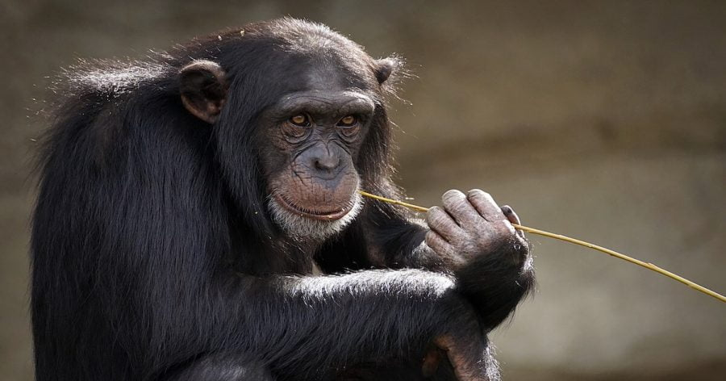

ပညာရှင် တွေဟာ ဘာသာစကား ဆိုတာ လူသားတွေ မှာပဲ ရှိတယ်လို့ ယူဆခဲ့ ကြပါတယ်။ လူသားနဲ့ တိရစ္ဆာန် တွေကို အဓိက ခွဲခြားထားတဲ့ အရာဟာ ဘာသာစကား ဖြစ်တယ်၊ ဘာသာ စကားဟာ အသိဉာဏ်ရည် မြင့်မားမှုရဲ့ လက္ခဏာ တစ်ရပ် ဖြစ်တယ် လို့ ရာစုနှစ်ပေါင်း များစွာ ကတဲက ယူဆခဲ့ ကြပါတယ်။
ဒါပေမယ့် အခု နောက်ဆုံး တင်ပြလာတဲ့ ချင်ပန်ဇီ မျောက်တွေ အပေါ် လေ့လာ သုတေသန ပြုထားတဲ့ သုတေသန ရလဒ် အရ ဘာသာ စကားဟာ လူသား တစ်မျိုးနွယ် ထဲနဲ့ သက်ဆိုင်တဲ့ အရည်အချင်း ဟုတ်မဟုတ် အငြင်း ပွားစရာ ဖြစ်လာ ပါတယ်။
အခု သုတေသနဟာ ချင်ပန်ဇီ မျောက်တွေ ပြုလုပ်တဲ့ အသံတွေကို ဖမ်းယူထားတဲ့ အသံဖမ်း မှတ်တမ်းပေါင်း ၅,၀၀၀ ကျော်ကို အသေးစိတ် ခွဲခြမ်း စိတ်ဖြာ သုတေသန ပြုပြီး ရလာတဲ့ အဖြေ ဖြစ်ပါတယ်။ ဒီ သုတေသနမှာ အိုင်ဗရီ ကိုစ် (Ivory Coast) အမျိုးသား ဥယဉ်ထဲက ချင်ပန်ဇီ မျောက်တွေကို သုတေသန ပြုရင်း ဖမ်းယူထားတဲ့ အသံဖမ်း မှတ်တမ်းတွေကို အသုံးပြု ခဲ့တာ ဖြစ်ပါတယ်။
သုတေသီ တွေက ဒီ ဖမ်းယူရရှိ ခဲ့တဲ့ အသံသွင်း မှတ်တမ်းတွေက တဆင့် ချင်ပန်ဇီ မျောက်တွေ ပြုလုပ်တဲ့ အသံတွေရဲ့ ဖွဲ့စည်း တည်ဆောက်ပုံကို လေ့လာ ခဲ့ကြပါတယ်။ ဒီ အခါ မျောက်တွေဟာ အသံထွက် အမျိုးမျိုးကို ပေါင်းစပ်ပြီး အသံတွဲ အမျိုးအစားပေါင်း ၃၉၀ တိတိ ပြုလုပ် နိုင်ကြတာကို အံ့ဩဖွယ်ရာ တွေ့ရှိ ကြရပါတယ်။
လူတွေမှာ ပြုလုပ်နိုင်တဲ့ အသံထွက် တွဲတွေနဲ့ နှိုင်းယှဉ်ရင် အသံတွဲ ၃၉၀ ဆိုတာ ဘာမှတော့ သိပ်ရှိတာ မဟုတ်ပါဘူး။ ဒါပေမယ့် လူမဟုတ်တဲ့ မျောက်တွေမှာ ဒီလောက် ပြောစရာ စကား စုံအောင် ရှိနေတယ် ဆိုတာကတော့ အတော်လေး အံ့ဩစရာ ဖြစ်လို့ နေပါတယ်။
အရင်က ပညာရှင် တွေက မျောက်တွေဟာ ဒီလောက်အထိ စုံလင်တဲ့ ဆက်သွယ်မှုမျိုး ပြုလုပ်နိုင်တဲ့ စွမ်းဆောင်ရည် ရှိမယ်လို့ မထင်ခဲ့ ကြပါဘူး။ ဒါ့ကြောင့်လဲ အခု သုတေသန တွေ့ရှိချက်ဟာ ပညာရှင် တွေကို အံ့အားသင့် သွားစေခဲ့တာ ဖြစ်ပါတယ်။
“ကျွန်တော်တို့ရဲ့ တွေ့ရှိချက်က ဘာကို ညွှန်ပြနေလဲ ဆိုတော့ ချင်ပန်ဇီ တွေမှာ အရင်က ထင်မှတ် ခဲ့တာထက်ကို ပိုပြီး နက်နဲ ရှုပ်ထွေးတဲ့ အသံထွက် ဆက်သွယ်ရေး စနစ် (စကားပြော စနစ်) ရှိတယ် ဆိုတာပဲ ဖြစ်ပါတယ်” လို့ ဒီ သုတေသနကို ဦးဆောင်သူ တာတီယာနာ ဘော်တိုလာတို က ရှင်းပြပါတယ်။
သူမဟာ ဂျာမနီ နိုင်ငံက မက်စ်ပလန့် တက္ကသိုလ်က ဆင့်ကဲဖြစ်စဉ်နှင့် မနုဿဗေဒ ဌာန (Max Planck Institute for Evolutionary Anthropology) က သုတေသီ တစ်ဦး ဖြစ်ပါတယ်။
ဒီ သုတေသနမှာ ပညာရှင် တွေက ချင်ပန်ဇီ တွေဟာ တစ်ခွန်းချင်း ထွက်တဲ့ အသံတွေကို ဘယ်လို ပေါင်းစပ် အသုံးချ ကြသလဲ ဆိုတာကို သိလိုလို့ သုတေသန ပြုခဲ့ကြတာ ဖြစ်ပါတယ်။
ဒီ အသံတွေကို ဘယ်လို ပေါင်းစပ် သုံးစွဲ ကြသလဲ၊ အသံတွေရဲ့ အစီအစဉ် (order) က ဘယ်လိုလဲ ဆိုတာ တွေ အပြင် ဒီလို ပေါင်းစပ် ထားတဲ့ အသံ အတွဲ တွေကို တစ်ခုနဲ့ တစ်ခု ဆက်စပ်ပြီး အသံတွဲ အရှည် ကြီးတွေ ဖြစ်လာအောင် ဘယ်လို ပေါင်းစပ် ယူကြသလဲ ဆိုတာကို လေ့လာ ခဲ့ကြပါတယ်။
တနည်းအားဖြင့် အသံထွက်တွေ ပေါင်းစပ်ပြီး စကားလုံးတွေ ဘယ်လို ဖန်တီး ယူကြသလဲ၊ နောက် ဒီ စကားလုံးတွေကို ပေါင်းစပ်ပြီး ဝါကျတွေ ဖြစ်လာအောင် ဘယ်လို ဖန်တီး ယူကြသလဲ ဆိုတာတွေကို လေ့လာခဲ့ ကြတာ ဖြစ်ပါတယ်။
ဒီလို ချင်ပန်ဇီ တွေရဲ့ အသံတွဲ တွေကို လေ့လာတာ ဒါဟာ ပထမဆုံး အကြိမ်တော့ မဟုတ်ပါဘူး။ ဒါပေမယ့် အရင်က ဘယ် သုတေသန ကမှ ဒီလောက်ထိ အသံတွဲ တွေကို စနစ်တကျ မှတ်တမ်း ပြုပြီး အသေးစိတ် လေ့လာမှုမျိုး မပြုလုပ် ခဲ့ကြပါဘူး။
ဒီ သုတေသန မှာ အရွယ်ရောက်ပြီး ချင်ပန်ဇီ ၄၆ ကောင် ပါဝင် ခဲ့ပါတယ်။ သူတို့ရဲ့ စကားသံ တွေကို နာရီ ၉၀၀ စာလောက် မှတ်တမ်း ယူခဲ့ ကြတာပါ။
ဒီ ချင်ပန်ဇီ ၄၆ ကောင်ဟာ ဒီ ဥယဉ် အတွင်း နေထိုင် ကြတဲ့ ချင်ပန်ဇီ အုပ် ၃ အုပ် အတွင်းက ချင်ပန်ဇီတွေ ဖြစ်ကြပါတယ်။
အသံ ပေါင်းစပ်မှုကို လေ့လာဖို့ သုတေသီ တွေဟာ အသံတွေ တစ်လုံးချင်း ထွက်တဲ့ ပုံစံ၊ အသံ နှစ်လုံးတွဲ ထွက်တဲ့ ပုံစံ နဲ့ အသံ ၃ လုံတွဲ ထွက်တဲ့ ပုံစံ တွေကို ခွဲခြမ်း စိတ်ဖြာပြီး လေ့လာ ခဲ့ကြပါတယ်။
နောက်ပြီး ဒီ အသံ တစ်လုံးတွဲ၊ နှစ်လုံးတွဲ နဲ့ သုံးလုံးတွဲ စကားလုံး တွေကို တစ်ခုနဲ့ တစ်ခု ဘယ်လို ပေါင်းစပ်ပြီး အသုံးပြု ကြလဲ ဆိုတာကိုလဲ ဆက်လက် လေ့လာ ခဲ့ပါတယ်။
ပြီးတော့ ဒီ အသံ တွဲတွေ ထဲက ဘယ် အတွဲတွေကို အကြိမ်ရေ ဘယ်လောက် အသုံးပြုကြ သလဲ ဆိုတာကိုလဲ လေ့လာ ခဲ့ပါတယ်။
ဒီလို လေ့လာ ခဲ့ရာမှာ အခြေခံ အသံ ၁၂ မျိုးကို ရှာဖွေ တွေ့ရှိ ခဲ့ကြပါတယ်။ ဒီ အခြေခံ အသံ တွေကို အခြေအနေ အမျိုးမျိုးမှာ အဓိပ္ပါယ် အမျိုးမျိုး အတွက် အသုံးပြု ကြတာကိုလဲ သတိ ထားမိ ခဲ့ပါတယ်။
ဒီ အခြေခံ အသံ ၁၂ မျိုးကို အမျိုးမျိုး ပေါင်းစပ် အသုံးပြုခြင်း အားဖြင့် အသံတွဲပေါင်း ၃၉၀ အထိ ဖန်တီး နိုင်တာကိုလဲ တွေ့ရှိ ခဲ့ကြပါတယ်။ ဒါပေမယ့် တကယ့် လက်တွေ့ မှာတော့ ဒီ အတွဲ ၃၉၀ ထက် ပိုများလိမ့်မယ်လို့ ပညာရှင် တွေက ယူဆ ကြပါတယ်။
အခုထိ ရရှိတဲ့ အချက်အလက် တွေဟာ လုံးဝ ပြီးပြည့်စုံ မှုတော့ မရှိ သေးပါဘူး။ တကယ်တမ်း ချင်ပန်ဇီ တွေရဲ့ ဘာသာ စကားကို အပြည့်အစုံ သိနားလည် နိုင်အောင် လေ့လာဖို့ ဆိုတာ အချိန် တွေ အကြာကြီး လေ့လာဖို့ လိုအပ်မှာ ဖြစ်ပါတယ်။
ဒါပေမယ့် အခု ရရှိတဲ့ မပြည့်စုံ သေးတဲ့ အချက်အလက် တွေအရကို ချင်ပန်ဇီ တွေရဲ့ ဘာသာ စကားဟာ ကျွန်တော်တို့ ထင်မှတ် ထားကြတာ ထက်ကို ပိုမို အဆင့်မြင့်ပြီး ပိုမို ရှုပ်ထွေးတယ် ဆိုတာကို ညွှန်ပြ နေပါတယ်။
နောက်ပြီး ချင်ပန်ဇီ တွေရဲ့ ဘာသာ စကားကို လေ့လာ မှုကနေပြီး လူသားတွေရဲ့ ဘာသာစကားတွေ ဘယ်လို ဖြစ်ပေါ် ပေါက်ဖွား လာသလဲဆိုတဲ့ မေးခွန်း ရဲ့ အဖြေ အတွက်လဲ သဲလွန်စတွေ ရလာ နိုင်ပါတယ်။
သုတေသီ တွေဟာ နောက်တဆင့် အနေနဲ့ ဒီ့ထက် ပိုများတဲ့ ချင်ပန်ဇီ စကားပြော မှတ်တမ်းတွေကို အသံဖမ်းယူဖို့ ပြင်ဆင်နေ ကြပါတယ်။ ဒီ နောက်ဆက်တွဲ သုတေသန တွေကနေပြီး ချင်ပန်ဇီ တွေရဲ့ ဘာသာစကားကို ပိုနားလည် လာနိုင်မယ်လို့ ယုံကြည် ကြပါတယ်။
“ဒါဟာ ပိုမို ကြီးမားတဲ့ သုတေသန စီမံကိန်းကြီး တစ်ခုရဲ့ ပထမ အကြို သုတေသနလေးသာ ဖြစ်ပါတယ်” လို့ ပြင်သစ်နိုင်ငံက သိမြင်မှု သုတေသန ဌာနကြီး (Institute for Cognitive Science at CNRS) က အကြီးတန်း သုတေသီ ကက်သရင်း ကရော့ဖိုဒ့် (Catherine Crockford) က ရှင်းပြပါတယ်။
“ချင်ပန်ဇီ အရိုင်းတွေရဲ့ အသံထွက် အတွဲတွေရဲ့ ရှုပ်ထွေးမှု တွေကို လေ့လာခြင်း အားဖြင့် သူတို့ထက် ပိုရှုပ်ထွေးတဲ့ လူမှု ဆက်ဆံရေး ရှိတဲ့ လူသားတွေ အနေနဲ့ ဘယ်က လာပြီး ဘာသာ စကားတွေ ဘယ်လို စတင် မွေးဖွားလာလဲ ဆိုတဲ့ အသိအမြင်ကို ရရှိစေ နိုင်မှာ ဖြစ်ပါတယ်” လို့ သူမက ရှင်းပြပါတယ်။
ယခု သုတေသန တွေ့ရှိချက် တွေကို Communication Biology သုတေသန ဂျာနယ်မှာ တင်ပြထားတာ ဖြစ်ပါတယ်။
Ref: Thousands of Chimp Vocal Recordings Reveal a Hidden Language We Never Knew About | Science Alert
ချင်ပန်ဇီ မျောက်တွေရဲ့ ဘာသာစကား ရှာဖွေတွေ့ရှိ

June 4, 2022
Other Posts
- မဟာပိရမစ်ကြီး အတွင်း လှို့ဝှက်ခန်း ရှာတွေ့
- လိပ်ပြာပုံ အာကာသ နက်ဗြူလာ ဓါတ်ငွေ့တိမ်တိုက်ကြီး
- အိုင်းစတိုင်း၏ လက်ရေးစာတမ်း ဒေါ်လာ ၁၃ သန်းနှင့် ရောင်းချ
- အမြင်အာရုံလှည့်စားတဲ့ ဓါတ်ပုံရဲ့ လှို့ဝှက်ချက်
- အမေဇုံ မြစ်ဝှမ်းဒေသအတွင်း ပျောက်ဆုံးနေသော ရှေးမြို့ဟောင်း အများအပြား ရှာတွေ့
- ဆုကြေး ဒေါ်လာ ၁ သန်းပေးမယ့် နာဆာရဲ့ ပြိုင်ပွဲ
- လွန်ခဲ့တဲ့ နှစ်သန်း ၃၀၀ တုန်းက ကမ္ဘာ့မြေပုံ
- Antimatter (ဆန့်ကျင်ဒြပ်) ဆိုတာဘာလဲ
- ကြယ်ပေါက်ကွဲမှု ဖြစ်စဉ် အစအဆုံး မှတ်တမ်းတင်နိုင်ခဲ့
- James Webb က ရိုက်ကူးထားသော စကြာဝဠာ၏ အနက်ရှိုင်းဆုံး ရပ်ဝန်းဓါတ်ပုံ နာဆာထုတ်ပြန်မည်